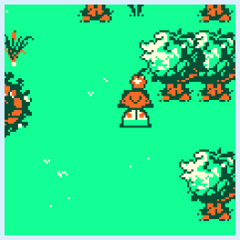
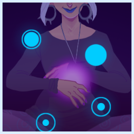

WAKE ROBIN GAMES
twitter tumblr itch.ioTEAM
|
Jackson Lango
Programmer A games programmer that started out as a hobbyist back in the Newgrounds era. He created Canvasser and Street DnD, and right now he's enjoying the dynamic stories of Rimworld. jacksonlango.com |
|
|
Conley Smith
Artist conleydraws.tumblr.com |
|
|
Nathan Franks
Musician nathanjfranks.com |
PROJECTS
|
Secret Unity Mobile Game Project
Unity C# Android, iOS Releasing Summer 2017. |
|
|
Secret Web Games Project
JavaScript Web (Desktop, Mobile) Releasing Spring 2017. |
|
|  |
Monster Buds
Unity C# Windows A game inspired by Animal Crossing where you live in a village of friendly monsters that you can talk to and trade items with. You can also plant trees, go fishing, and do a bunch of other peaceful activities. Download on Itch.io |
|  |
Rhythmica
Unity C# Web A rhythm microgame/prototype made during the 2016 Global Game Jam. Play Online |
Copyright © 2017